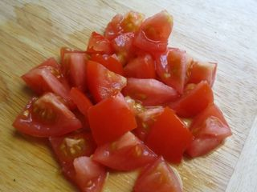
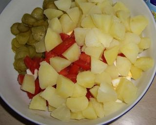

Шаг 1: Подготавливаем картофель и яйца.
Приготовление салата начнем с картофеля и яиц. Итак, яйца промываем под горячей проточной водой, аккуратно укладываем их в небольшую кастрюлю, заливаем чистой водой и ставим на плиту. Включаем средний огонь и пока ждем когда жидкость закипит - тщательно промываем картофель (кожурку оставляем). Для нашего рецепта нужно 400 грамм картофеля - обычно столько весят 2 или 3 штуки, в зависимости от размера. Теперь включаем соседнюю конфорку на максимальный уровень, ставим кастрюлю и наливаем воду (солить пока не надо).
Тем временем жидкость с яйцами закипела, значит можно слегка сбавить огонь и варить их до полной готовности. Через 6 - 8 минут выключаем огонь, сливаем с готовых яиц горячую воду и наливаем холодную проточную (так они быстрее остынут).
Возвращаемся к картофелю: опускаем его в закипевшую воду, сбавляем огонь до среднего и варим минут 10. После чего добавляем по вкусу соль, перемешиваем и варим до полной готовности еще 15 - 20 минут. Как проверить сварился ли картофель? Очень просто - вооружаемся вилкой или ножом и протыкаем мякоть овоща, если зубцы или лезвие легко ее проткнули, значит сварился, если нет - тогда варим минут 5 - 7 и снова проверяем.
Сваренный картофель аккуратно достаем из воды, перекладываем в тарелку и оставляем остывать.
Шаг 2: Нарезаем остальные ингредиенты.

Пока варится картофель, чтобы время зря не терять, мы успеем нарезать все остальные ингредиенты. Промываем под проточной водой помидоры и зеленый лук, выкладываем на разделочную доску и измельчаем: помидоры режем кусочками произвольной формы около 1 - 1,5 сантиметров, а зеленый лук мелко шинкуем. Перекладываем их в глубокую тарелку, миску или салатницу.
Теперь ветчина, чтобы она красиво смотрелась в салате, нарезать ее лучше кубиками или брусочками. Итак, выбрав желаемую форму, измельчаем и перекладываем ветчину в тарелку с помидорами и луком.
Соленые огурцы также можно нарезать несколькими способами: кубиками, брусочками, кружочками, ломтиками или дольками. На вкус салата форма нарезки не повлияет. По этому нарезаем так, как больше нравится и укладываем в общую тарелку.
Шаг 3: Нарезаем яйца с картофелем.
Пока мы нарезали ингредиенты, яйца наверняка успели остыть и их можно с легкостью очистить от скорлупы. Затем измельчить и переложить в салатницу. Способов измельчения, опят же, несколько: натираем на терке с маленькими отверстиями, нарезаем соломой или дольками.

Далее очищаем от кожуры сваренный и остывший картофель, выкладываем на разделочную доску и нарезаем дольками или кубиками. После убираем в миску и перемешиваем столовой ложкой до однородности.
Шаг 4: Заправляем салат.
Теперь осталось салат заправить майонезом, посолить по вкусу солью (лучше заранее попробовать, так как использовались соленые огурцы и майонез), снова перемешивать и можно подавать к столу.